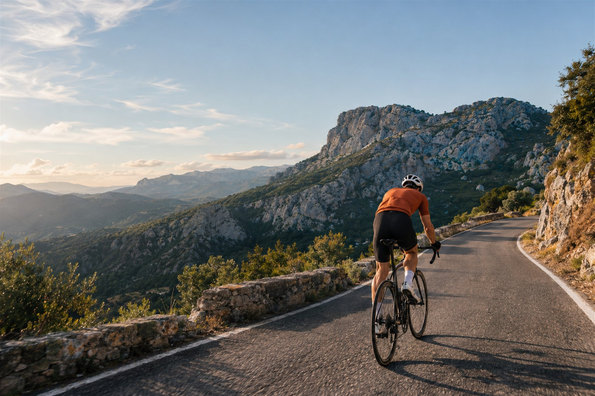
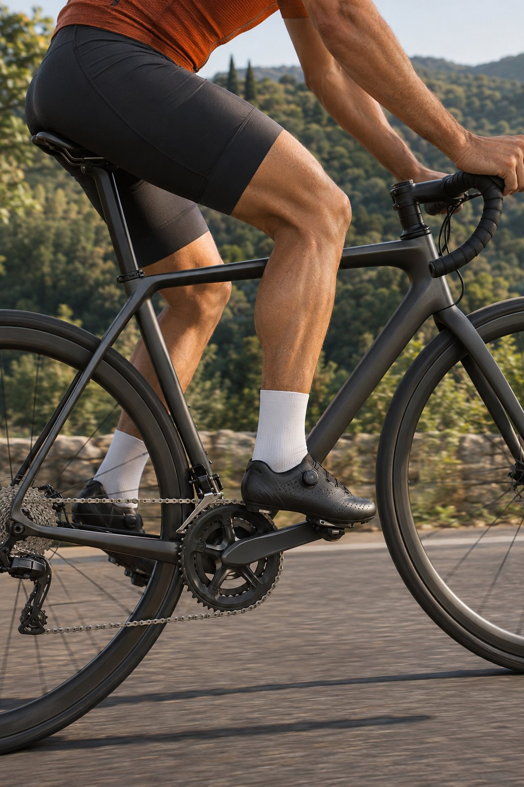
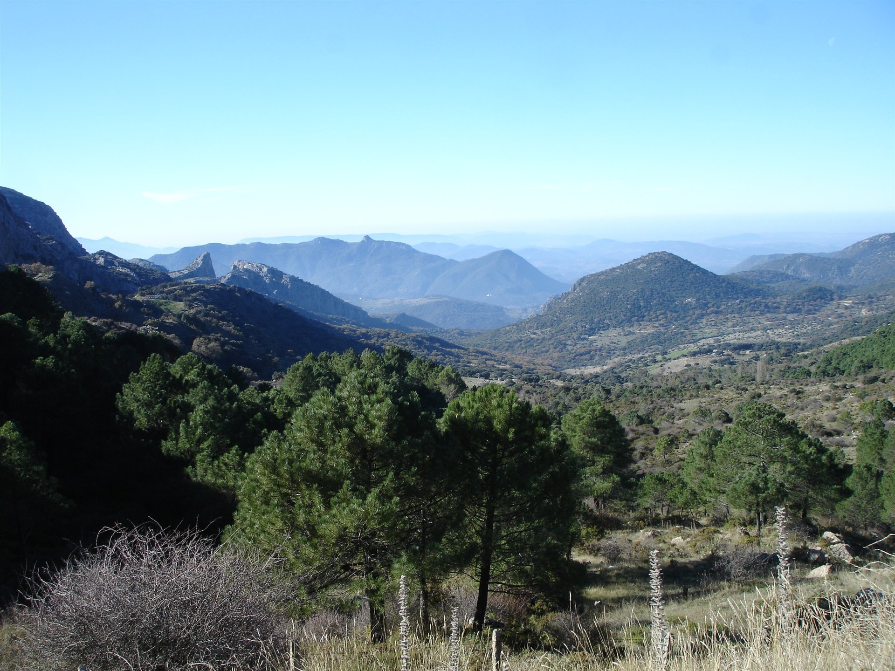

BEYOND THE ROAD
MÁS ALLÁ
DEL ASFALTO.
Le Velo Cycling.
Andalucía se siente pedaleando.
01 / EL ESPÍRITU LE VELO
DOS RUEDAS. OTRA PERSPECTIVA.HAY PAISAJES
QUE SE MIRAN.
OTROS SE SIENTEN.
La carretera, el aire
y todo lo que queda
por descubrir.
Le Velo Cycling conecta el mundo del ciclismo con los viajes por Andalucía. Una forma de acercarse al paisaje desde el sillín, con El Bosque como referencia.
Conoce a Le Velo02 / EL LENGUAJE DEL MOVIMIENTO
ENCUENTRA
TU RITMO.
El sonido de las ruedas.
La siguiente curva.
La libertad de seguir.

03 / EL ENTORNO
SIERRA DE GRAZALEMAEL SUR.
A CIELO ABIERTO.
Montañas calizas, valles verdes y horizontes que cambian con la luz. El paisaje de la Sierra de Grazalema forma parte del imaginario de Le Velo.

Una mirada al paisaje. Las fotografías de esta página son recursos de inspiración visual.
04 / CICLISMO Y VIAJES
DOS FORMAS
DE ABRIR CAMINO.
La web oficial presenta vacaciones ciclistas en Andalucía, con propuestas de carretera y gravel. Consulta allí la oferta vigente y sus condiciones.
CARRETERA
Explorar en la web oficial 02 / GRAVEL ADVENTURESGRAVEL
Explorar en la web oficial05 / EL PUNTO DE PARTIDA
LE VELO CYCLINGTODO EMPIEZA
CON UN HOLA.
LLÁMANOS
696 17 70 09